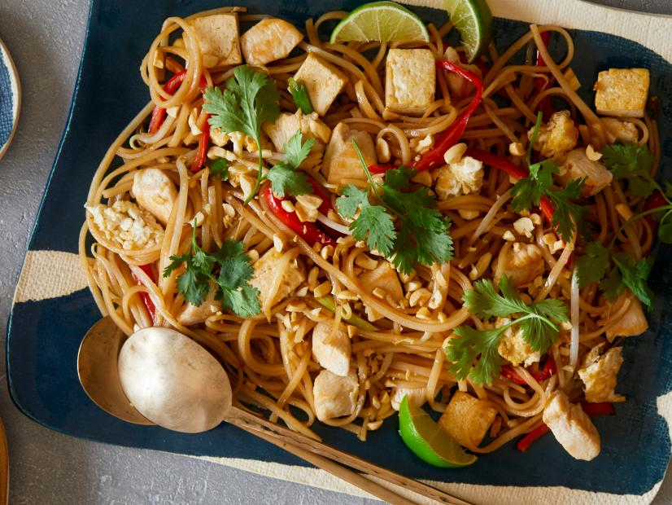

Chicken Pad Thai

Description
It is a noodle stir fry dish traditionally made up of rice noodles, chicken, eggs and a deeply flavored, sweet and sour sauce.
Ingredients
- 5 ounces flat rice stick noodles (linguini size)
- 3 tablespoons fish sauce
- 2 tablespoons brown sugar
- 2 tablespoons tamarind paste or tamarind concentrate
- 1 to 3 tablespoons sriracha (depending on desired heat level)
- 1 tablespoon lime juice
- 3 tablespoons vegetable oil
- 1/4 cup cubed extra-firm tofu (1-by-1/2-inch cubes)
- 6 ounces chicken breast, cut into 1/2-inch cubes
- 1 shallot, thinly sliced
- 1 large egg, lightly beaten
- 1/2 red bell pepper, cut into thin strips
- 1 cup mung bean sprouts
- 3 thin scallions, cut diagonally into 1-inch pieces (see Cook's Note)
- 1/4 cup roasted peanuts, chopped
- 1/4 cup fresh cilantro leaves
- Lime wedges, for serving
Instructions
- For the noodles: Cook the noodles according to the package instructions.
- For the sauce: Stir together the fish sauce, brown sugar, tamarind, sriracha and lime juice in a small bowl until well combined.
- For the stir fry: Heat the oil in a large nonstick skillet over medium heat. Add the tofu and cook, stirring occasionally, until lightly browned, 4 to 5 minutes. Push the tofu to the side, allowing the excess oil to drip down into the middle of the skillet. Add the chicken and shallots and cook, stirring occasionally, until the chicken is opaque and cooked through, 4 to 5 minutes. Push to the side with the tofu, allowing the excess oil to drip down into the middle of the skillet. Add the beaten egg to the skillet and cook, stirring occasionally and chopping to break up, until cooked through, about 30 seconds. Push the egg to the side with the tofu and chicken. Add the peppers to the skillet and cook just to soften slightly, about 2 minutes. Add the noodles, bean sprouts, scallions and sauce to the skillet. Combine the tofu, chicken and egg into the ingredients and stir fry, coating the ingredients with the sauce, and simmer to thicken, 3 to 5 minutes.
- Pile the stir fry onto a serving plate and top with chopped peanuts and cilantro leaves. Serve immediately with lime wedges.